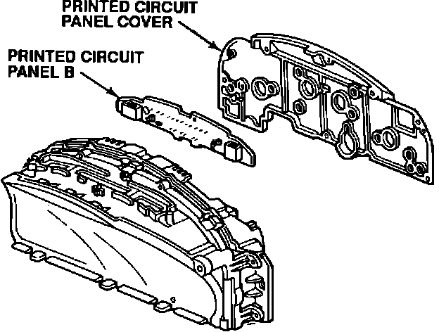
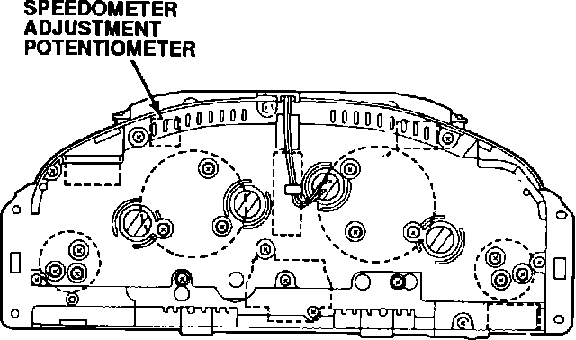

Speedometer - Reads Too High
91acura05
November 4, 1991
BULLETIN NO.
91-048
YEAR MODEL VIN APPLICATION
1991 LEGEND ALL
Speedometer Reads Too High
SYMPTOM
The customer complains about the speedometer's accuracy.
CORRECTIVE ACTION
Adjust the speedometer so it reads closer to the actual speed.
NOTE: This adjustment is not a calibration.
1. Remove the gauge assembly. Refer to page 23-138 of the service manual for the removal procedure.
NOTE: To remove the courtesy light controller LS, refer to service bulletin 91-028.

2. Remove the printed circuit panel cover (white plastic) from the back of the gauge assembly. Remove printed circuit panel B, then reinstall the circuit panel cover.
3. Reconnect the electrical connectors to the gauge assembly. Position the assembly so you can get at the back.
4. Raise the front end of the car and support it securely.
5. Start the engine and put the car in gear. Bring the speedometer up to 63 mph.

6. Hold it at 63 mph for ten seconds and note the tachometer reading.
7. Use a small screwdriver to turn the speedometer adjustment potentiometer counterclockwise until the speedometer reads 60 mph at the same tachometer reading..
8. Reinstall printed circuit panel B and the printed circuit panel cover.
9. Reinstall the gauge assembly.
WARRANTY CLAIM INFORMATION
In warranty: The normal warranty applies.
Out-of-warranty: Any repair performed after warranty expiration may be eligible for goodwill consideration by the District Service Manager. You must request consideration, and get the DSM's decision, before starting work.
Operation number: 731320
Flat rate time: 1.0 hour
Failed P/N: 78120-SP0-A02
Defect code: 039
Contention code: B99